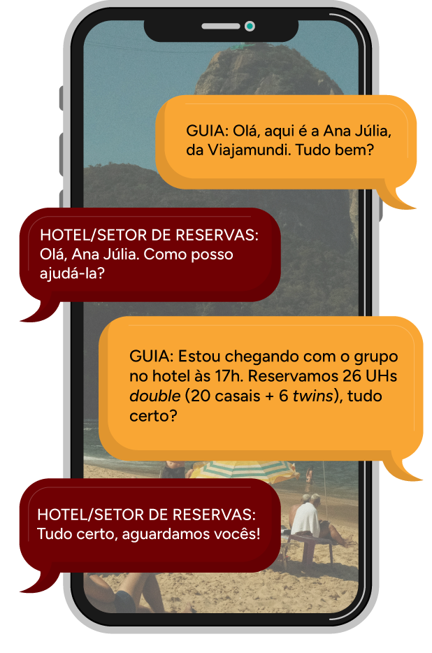

Check-in e check-out em meios de hospedagem: orientações ao turista, procedimentos de entrada, acompanhamento durante a hospedagem e procedimentos de saída
Durante a condução de roteiros turísticos, os momentos de check-in e check-out em meios de hospedagem exigem do guia de turismo uma atenção especial aos procedimentos. Esse cuidado é fundamental para que essa etapa do roteiro ocorra com eficiência, garantindo que todos os detalhes referentes à hospedagem sejam esclarecidos.
Este material mostrará que sua atuação como guia de turismo ocorre antes mesmo da chegada ao local, sendo necessário conhecer previamente o meio de hospedagem e sua infraestrutura, localização dele e os serviços próximos, para que você possa orientar o grupo. O check-in envolve o processo de chegada do grupo ao meio de hospedagem. Nesse processo, junto à equipe do local, você será responsável por acomodar todos e trazer as informações necessárias. Orientações sobre documentação para o check-in, horários dos serviços do hotel e próximas etapas do roteiro, detalhes sobre o funcionamento das instalações e serviços oferecidos serão transmitidos por você neste momento.
Durante a hospedagem, o seu trabalho variará de acordo com o roteiro e a intensidade das programações. O processo de check-out abrange as etapas de encerramento da estadia, com o encerramento de contas, a revisão dos serviços utilizados e os procedimentos para liberação do apartamento, garantindo uma saída organizada e sem contratempos.
Durante a condução de roteiros turísticos, os momentos de check-in e check-out em meios de hospedagem exigem do guia de turismo uma atenção especial aos procedimentos. Esse cuidado é fundamental para que essa etapa do roteiro ocorra com eficiência, garantindo que todos os detalhes referentes à hospedagem sejam esclarecidos.
Este material mostrará que sua atuação como guia de turismo ocorre antes mesmo da chegada ao local, sendo necessário conhecer previamente o meio de hospedagem e sua infraestrutura, localização dele e os serviços próximos, para que você possa orientar o grupo. O check-in envolve o processo de chegada do grupo ao meio de hospedagem. Nesse processo, junto à equipe do local, você será responsável por acomodar todos e trazer as informações necessárias. Orientações sobre documentação para o check-in, horários dos serviços do hotel e próximas etapas do roteiro, detalhes sobre o funcionamento das instalações e serviços oferecidos serão transmitidos por você neste momento.
Durante a hospedagem, o seu trabalho variará de acordo com o roteiro e a intensidade das programações. O processo de check-out abrange as etapas de encerramento da estadia, com o encerramento de contas, a revisão dos serviços utilizados e os procedimentos para liberação do apartamento, garantindo uma saída organizada e sem contratempos.
A compreensão desses procedimentos são necessários para que o guia de turismo desempenhe seu papel com o profissionalismo e a atenção que este processo exige, e que também esteja ciente de que o momento da estadia representa uma etapa do roteiro que conta muito na percepção do grupo sobre a experiência da viagem como um todo.
Orientações ao turista
Conhecer previamente o meio de hospedagem que compõe o roteiro é uma responsabilidade do guia de turismo em sua preparação para viagem. Saber o que o estabelecimento oferece em termos de infraestrutura, acessibilidade, equipamentos, quais os serviços ofertados no local, além dos serviços de apoio existentes nas proximidades auxiliará você a prestar um serviço de qualidade e confiabilidade. O meio de hospedagem é também uma referência para todos os envolvidos no roteiro, você e os turistas, guias regionais e agências de receptivo, tornando-se um ponto de encontro e partida para os passeios e a base para que você organize a condução das atividades programadas no roteiro.
Busque informações detalhadas sobre o meio de hospedagem e seu entorno para orientar o grupo. É comum que os viajantes façam alguns questionamentos sobre o meio de hospedagem, então esteja preparado para comunicar eficientemente às perguntas que poderão surgir:
- O meio de hospedagem tem elevador?
- É acessível para pessoas com deficiência?
- Tem piscina? Até qual horário posso utilizar?
- A recepção oferece serviço de câmbio?
- Se eu precisar comprar algum remédio, há farmácias próximas?
- Qual é o horário do café da manhã?
- Tem banco 24 horas por perto?
Outro ponto fundamental que deve ser conferido são os horários determinados pelo meio de hospedagem para o check-in e check-out.
Você sabia que existe um horário preestabelecido para o check-in e o check-out?
Cada estabelecimento tem seus próprios horários de check-in e de check-out, que podem variar conforme o tipo de hospedagem e a localidade. Entretanto, há um certo padrão. Geralmente, os horários estabelecidos no Brasil são os seguintes:
Horário do check-in: entre 14h, 15h ou 16h
Horário do check-out: 12h
Assim, uma diária é contabilizada até às 12h do dia seguinte. Por exemplo, se o grupo tem uma reserva de sexta a domingo, poderá realizar o check-in a partir das 14h de sexta-feira e sair até às 12h de domingo, contabilizando duas diárias no hotel.
E se o grupo precisar chegar antes ou sair depois dos horários estabelecidos? É possível negociar?
Para esses casos, existem as seguintes opções:Clique ou toque para visualizar o conteúdo
Refere-se à entrada do grupo em um meio de hospedagem antes do horário preestabelecido.
Refere-se à saída do hóspede após o horário padrão. É uma tolerância que pode ser concedida se houver disponibilidade.
Refere-se à entrada do grupo em um meio de hospedagem antes do horário preestabelecido.
Refere-se à saída do hóspede após o horário padrão. É uma tolerância que pode ser concedida se houver disponibilidade.
Normalmente, os meios de hospedagem cobram um valor pré-estipulado por esses procedimentos. Existe também a possibilidade de verificar com o meio de hospedagem se existe um quarto ou um espaço seguro para guardar as bagagens sem ônus ao hóspede, caso seja necessário.
Vale ressaltar que existem meios de hospedagem não convencionais que complementam a oferta de leitos no turismo, como os acampamentos e albergues ou hostels, nos quais as regras sobre os horários de entrada e saída podem variar bastante. Ainda, é recomendado sempre verificar antes da chegada as especificidades e o regulamento interno desses estabelecimentos para orientar os turistas com precisão.
Cabe também ao guia de turismo observar qual é o tipo de pensão prevista na diária dos meios de hospedagem ou negociado para o pacote turístico. Os tipos de pensão referem-se ao conjunto de refeições incluídas na diária. Aqui estão os principais tipos de pensão para que você possa orientar os passageiros sobre a alimentação:
- Diária sem alimentação/sem pensão: apenas hospedagem sem nenhuma refeição. São mais comuns em meios de hospedagem não convencionais, como hostel e acampamento.
- Diária com café da manhã: inclui a hospedagem com café da manhã. É um dos regimes de alimentação mais comuns em pacotes turísticos.
- Diária com meia pensão (MAP): inclui hospedagem, café da manhã e uma refeição adicional, geralmente o jantar ou almoço e bebidas à parte.
- Diária com pensão completa, ou “full board” (FAP): inclui hospedagem, café da manhã, almoço e jantar, geralmente com bebidas à parte.
- Diária all inclusive, ou “tudo incluído”: inclui hospedagem com todas as refeições, lanches e algumas bebidas.
Agora que você já está munido das informações básicas para começar o seu trabalho, é hora de entrar em contato com o meio de hospedagem para alinhar os próximos passos. Sempre que possível, confirme previamente com o meio de hospedagem o horário de chegada do grupo, para se certificar de que as unidades habitacionais (UHs) já estejam prontas quando chegarem e a recepção possa se organizar para receber o grupo.
GUIA: Olá, aqui é a Ana Júlia, da Viajamundi. Tudo bem?
HOTEL/SETOR DE RESERVAS: Olá, Ana Júlia. Como posso ajudá-la?
GUIA: Estou chegando com o grupo no hotel às 17h. Reservamos 26 UHs double (20 casais + 6 twins), tudo certo?
HOTEL/SETOR DE RESERVAS: Tudo certo, aguardamos vocês!
Após confirmar com o meio de hospedagem os detalhes da reserva, você já pode orientar os turistas quanto aos primeiros procedimentos antes mesmo da chegada. Assim, você otimiza o tempo de deslocamento, aproveitando também que tem a atenção do grupo durante o trajeto.
Procure trazer as seguintes informações iniciais:
- Nome do meio de hospedagem
- Categoria do meio de hospedagem e das unidades habitacionais
- Serviços oferecidos (inclusos e não inclusos)
- Horário das refeições
- Região onde está localizado na cidade e serviços próximos (farmácias, bancos, mercados)
- Orientações para o procedimento de entrada (check-in)
Com o avanço da tecnologia, muitos meios de hospedagem já têm sistemas próprios para acelerar o check-in antes da chegada do hóspede ou grupo. Procure informar-se antecipadamente se o meio de hospedagem trabalha com check-in antecipado ou pré-check-in. O pré-check-in permite que os viajantes preencham os dados obrigatórios para estadia antes da chegada ao hotel por meio de recursos on-line.
Essa ação traz agilidade para a entrada do grupo, reduzindo o tempo de espera na recepção. Outro exemplo de check-in automatizado acontece em terminais de autoatendimento, disponíveis no hall do hotel para o cliente fazer o seu ingresso. Neste momento, é importante que o guia fique disponível para auxiliar seu grupo, caso tenha alguma dúvida ou dificuldade.
Fonte: Listra (2023)
Aproveite o tempo de deslocamento da viagem para solicitar ao grupo que realize o preenchimento dos dados obrigatórios para hospedagem, orientando-os sobre o processo on-line, se disponível.
Embora ainda não seja uma exigência formal, o Ministério do Turismo informou que está em fase de testes o novo modelo da Ficha Nacional de Registro de Hóspedes (FNRH), que será digital. A ideia é que o hóspede possa acessar a versão eletrônica da ficha antecipadamente, trazendo benefícios para todos os envolvidos (Marques, 2024). A estimativa é que a ficha manual seja substituída pela versão digital ainda em 2025. Procure informar-se sobre esse novo modelo, pois ele trará mais agilidade ao seu trabalho como guia de turismo nesta etapa, principalmente para o acompanhamento de grandes grupos de turismo, proporcionando mais fluidez para o check-in.
Procedimentos de entrada
A chegada ao meio de hospedagem, o check-in, gera sempre muita expectativa e ansiedade entre os turistas, pois todos querem chegar logo às suas acomodações. Considerando isso, mantenha sempre a calma e transmita segurança ao seu grupo, orientando-o sobre os procedimentos a serem seguidos.
Chegando ao local de hospedagem, repasse ao grupo informações gerais, com detalhes sobre o meio de hospedagem escolhido e as orientações que precisam ser seguidas com relação a bagagens e acomodação. Destaque a necessidade de ter em mãos o documento de identificação e autorização para hospedagem de menores, se for o caso.
Se possível, desembarque primeiro e dirija-se até a recepção para o primeiro contato com a equipe da hospedagem. O guia deve apresentar o voucher (comprovante da reserva) e a rooming list (lista de passageiros divididos por apartamento), para que a recepção possa providenciar as fichas de registro de hóspedes e as chaves. Aproveite para verificar onde ficam toaletes, salão de refeição e direção das unidades habitacionais.
Que tal ver mais detalhes sobre a rooming list?
Rooming list é a lista de hóspedes organizados por apartamento, que especifica a forma de acomodação dos passageiros (quartos duplos, quartos triplos etc.) e o nome de cada um dos ocupantes do quarto. É feita uma rooming list para cada hotel nos casos de roteiros que incluem diferentes cidades.
No processo de reserva dos apartamentos, a agência faz um bloqueio com o número de apartamentos que deseja reservar, e o hotel dá um prazo para a confirmação e o envio da rooming list. Portanto, a listagem deve ser enviada antecipadamente ao hotel e o guia de turismo deve conferi-la sempre, tendo atenção a alguns detalhes, como a distribuição dos apartamentos. O guia também deve estar atento à existência de casais homoafetivos e de pessoas com dificuldade de locomoção, considerando também cama extra ou berço para crianças. Assim, o profissional certifica-se de que estão acomodados da melhor forma possível e evita transtornos. No botão a seguir você poderá baixar um modelo de rooming list.
Clique ou toque no botão a seguir para fazer o download do arquivo.
BaixarEnquanto isso, avalie a melhor alternativa de acordo com o cenário. Os passageiros podem aguardar no veículo ou, aos poucos, irem desembarcando e pegando suas bagagens com o motorista, o responsável por retirar as bagagens do bagageiro. Geralmente, é mais eficiente que o grupo aguarde no ônibus enquanto você acerta os detalhes. Dessa forma, você ganha agilidade nos processos, podendo conferir se os apartamentos já estão prontos e resolver eventuais pendências sem que os passageiros se envolvam. Além disso, evita desconforto no caso de grandes grupos no lobby, dificultando também a movimentação de outros hóspedes, e garante uma comunicação mais eficiente, pois, se houver alguma alteração ou instrução especial, você poderá informar o grupo de uma só vez.
Verifique com a equipe do meio de hospedagem o local adequado para que o grupo aguarde a realização dos procedimentos de check-in, a conferência da rooming list e a liberação de chaves. Alguns meios de hospedagem oferecem uma bebida de boas-vindas (welcome drink) para evitar a dispersão e o tumulto na recepção.
Ao desembarcar o grupo, indique o local em que ele deve aguardar o recebimento das chaves de suas unidades habitacionais (UHs). Enquanto isso, verifique com a recepção se a rooming list e os serviços nela especificados estão de acordo com os dados fornecidos pelo hotel. Na rooming list, anote o número de cada apartamento ao lado do nome de cada membro do grupo. Outra opção é verificar se a recepção fornece a relação dos apartamentos do grupo por meio do sistema do hotel, principalmente em casos de grandes excursões.
Quando os passageiros chegam ao hotel, é preciso orientá-los sobre o preenchimento das fichas de registro de hóspedes ou do cadastro de hóspedes, que deverão ser preenchidos e entregues à recepção. O guia de turismo recolhe as fichas preenchidas por cada passageiro e faz a entrega na recepção. Caso o grupo já tenha realizado o check-in antecipado, será necessário apresentar apenas o documento de identificação e assinar a ficha já preenchida de forma on-line.
Mas você conhece a FNRH?
A FNRH tem como função estratégica fornecer uma base estatística para subsidiar ações de planejamento e gestão do turismo nos âmbitos tanto governamental quanto empresarial. No Brasil, seu preenchimento é obrigatório, conforme Portaria nº 216/2012 do Ministério do Turismo (MTur), e caberá ao meio de hospedagem transmitir essas informações eletronicamente ao MTur.
![Cópia da Ficha Nacional de Registro de Hóspedes. Na parte superior, há o logotipo do Ministério do Turismo e um espaço para que o estabelecimento insira o seu próprio logotipo. Os itens que devem ser preenchidos e que constam na ficha são: nome completo, e-mail, telefone, profissão, nacionalidade, data de nascimento, gênero, documento de identidade, residência permanente, cidade, estado, país, última procedência, próximo destino, motivo da viagem, meio de transporte, número de hóspedes, entrada e saída. No final da página, assinatura do hóspede.](img/FNRH.png)
Fonte: Brasil (2022)
Se houver menores no grupo, fique atento para questões legais de hospedagem e oriente no início do roteiro sobre a documentação necessária para hospedagem. Se a criança ou o adolescente estiver viajando desacompanhada(o) dos pais ou responsáveis, é necessário que apresente uma autorização expressa deles com reconhecimento de firma em cartório. A autorização para hospedagem não é mesma que o passageiro apresenta para embarque com menor, é um documento específico que detalha informações sobre o período da estadia e outros detalhes.
A autorização é exigida pelo Estatuto da Criança e do Adolescente (ECA), que proíbe a hospedagem de menores sem a autorização de pais ou responsáveis. As regras servem para coibir sequestros de crianças e adolescentes.
É importante frisar que, segundo os artigos 82 e 83 da Lei nº 8.069, de 13 de julho de 1990, uma criança ou adolescente pode viajar com parente ascendente ou colateral maior, até o terceiro grau, desde que o parentesco seja comprovado por documento. Avós podem viajar com neto, por exemplo. No entanto, só podem hospedar-se com uma criança os pais ou responsáveis legais, ou alguém autorizado por eles.
No botão a seguir você poderá baixar um modelo de autorização para hospedagem de menores de idade.
Clique ou toque no botão a seguir para fazer o download do arquivo.
BaixarEscolha junto à equipe do meio de hospedagem um local para instalar o informativo da programação. Antes da entrega das chaves, informe ao grupo onde está afixado o informativo e o horário e o local do próximo encontro ou da próxima saída, além dos trajes adequados ao passeio. Lembre-se de que o informativo é um recurso importante para manter a comunicação clara com o grupo, mas você ainda deve ter outras estratégias para manter todos informados, como a comunicação por aplicativos de mensagens, o WhatsApp, por exemplo. Saiba que nem todos absorvem as informações da mesma forma ou utilizam os mesmos recursos tecnológicos que você, então procure manter o seu grupo informado por mais de um canal de comunicação.
É importante que a programação impressa contenha todas as atividades do dia, desde o momento de despertar até o retorno ao hotel para descanso. Analise o modelo de comunicação impressa a seguir, baseado Carolla (2023, p. 306):
PROGRAMAÇÃO
GRUPO VIAJAMUNDI
GUIA: ANA JÚLIA COSTA
DATA: 22/11/2024
| HORÁRIO | PROGRAMAÇÃO |
|---|---|
| 8h | Despertar e café da manhã |
| 9h | Saída para passeio ao centro histórico |
| 10h | Visita ao Museu do Café |
| 11h20 | Visita ao Museu Pelé |
| 13h | Almoço no restaurante Beira-Mar |
| 14h | Visita ao Museu do Mar |
| 15h30 | Visita ao Orquidário Municipal |
Repasse com o grupo as últimas informações importantes, como ligar para recepção, o horário das alimentações e como localizar você (seu número de celular e em qual apartamento estará hospedado). Assegure-se de que todos entendam as orientações. Após transmitir as informações, entregue as chaves, desejando-lhe uma ótima estadia.
Assim que finalizar o processo de acomodação de todos, realize a acomodação do(s) motorista(s) e a sua, preferencialmente em apartamentos separados. Desse modo, ambos podem descansar e organizar as atividades do dia seguinte. Como o guia de turismo é o primeiro a estar de pé e o último a se recolher, precisa estar descansado e disponível para prestar um bom serviço ao grupo.
O guia de turismo deverá aguardar na recepção por cerca de 15 minutos até que todos estejam acomodados em suas UHs. Dessa maneira, em caso de alguma divergência, o profissional estará junto à recepção para auxiliar na resolução do problema. Mesmo que seja uma responsabilidade da equipe de hospedagem, é importante que você esteja ciente dos fatos e disponível para apoiar, se necessário.
Acompanhamento durante a hospedagem
É de bom tom que o guia de turismo entre em contato com os seus passageiros para averiguar se a acomodação está adequada, se tem alguma dúvida ou precisam de ajuda. Existem hotéis que oferecem o serviço de despertar, então aproveite para verificar se o passageiro tem interesse, pois isso ajuda a evitar atrasos. Nunca programe um serviço de despertar sem o consentimento dos passageiros.
Durante a hospedagem, a sua organização dependerá das características do roteiro. Se a programação for intensa, haverá pouco tempo de trabalho no meio de hospedagem. No caso de roteiro com mais tempo livre, você precisará disponibilizar tempo para atender ao grupo em suas necessidades durante a estadia. Uma boa alternativa é estabelecer horários para atendimento ao grupo em local específico, como uma espécie de “plantão”. De acordo com Carolla (2023), “são momentos em que o guia de turismo pode resolver questões operacionais do roteiro e atender a seus passageiros sem que eles precisem ligar ou bater à porta de seu quarto”.
Algumas questões que podem ser trabalhadas nos plantões são:
- Dúvidas gerais
- Oferta de passeios opcionais
- Questões operacionais do roteiro
Esses plantões são uma boa estratégia para facilitar a comunicação por meio de um suporte imediato, prevenindo insatisfações e fortalecendo a relação com o cliente. Desta maneira, você conseguirá organizar suas demandas e melhorar a experiência dos passageiros durante a estadia.
Nos roteiros com mais pernoites, lembre-se de que você e o motorista devem despertar antes do grupo para realizar suas tarefas. É indicado que o guia de turismo esteja pronto para receber o grupo no café da manhã para passar as orientações do dia. Conforme os passageiros chegam, você poderá fazer o controle pela rooming list, para saber quem já está presente e quem ainda não veio. Dessa maneira, você poderá identificar antecipadamente possíveis passageiros que vão atrasar e entrar em contato com eles, se necessário. Alguns passageiros podem optar por ficar no hotel e fazer outras atividades (mas nem sempre avisarão você), e o controle pela rooming list permitirá que você identifique esses casos.
Enquanto o grupo toma o café da manhã, você pode passar de mesa em mesa para cumprimentar seus passageiros e orientá-los sobre as atividades do dia, os trajes necessários, os pagamentos extras (ingressos, refeições etc.). Vale lembrar que há outros hóspedes no local que não fazem parte do seu grupo, logo, seja discreto neste ambiente evitando falar em voz alta.
Ao longo da estadia, sempre que houver saídas com o transporte, embarque antes para fazer a vistoria de limpeza do veículo, os abastecimentos necessários no frigobar e a verificação das condições da toalete. Realize a contagem dos passageiros no embarque e lembre-se de sinalizar em sua lista de passageiros aqueles que optaram por fazer outras atividades.
No dia anterior ao check-out, procure a equipe da recepção para lembrar o horário previsto de saída do grupo.
Para evitar atrasos no fechamento de contas, pode-se recomendar ao grupo que faça a conferência e o acerto de suas despesas extras junto à recepção antecipadamente (antes do dia do check-out). Mesmo com suas orientações sobre extras não inclusos na diária, alguns passageiros se surpreendem com suas contas na saída e demandam mais tempo para esclarecimentos. Dessa forma, a saída do grupo será mais ágil, antecipando possíveis imprevistos na conferência de despesas individuais e pagamentos.
Estes são outros cuidados que o guia deve ter à acomodação do grupo no hotel:
- Resolva os problemas que surgirem e telefone para a agência no caso de não conseguir solucioná-los.
- Auxilie na distribuição de bagagens, mas lembre-se de que cada passageiro é responsável por seus pertences.
- Solicite que cada um coloque o número do apartamento na sua bagagem; por vezes, a recepção faz esse processo.
- Comunique ao grupo o número do seu apartamento.
- Entregue uma cópia da rooming list à recepção
- O guia e o motorista devem ser os primeiros a despertar. Solicite o serviço à recepção (se disponível).
- Informe à recepção o horário de despertar do grupo.
O guia também deve conversar com o grupo sobre:
Clique ou toque para visualizar o conteúdo.
Gastos extras
Explique que serviços como ligações telefônicas, consumo do frigobar (refrigerantes, chocolates, snacks), lavanderia e pedidos ao serviço de quarto geralmente são cobrados à parte e não estão incluídos no valor da diária.
Revisão do frigobar
É importante conferir os itens consumidos e informar a recepção imediatamente em caso de divergências, evitando cobranças indevidas no check-out.
Demora da lavanderia
Explique os prazos de entrega, que podem variar dependendo da demanda do hotel, e sugira que os hóspedes se planejem com antecedência, especialmente se precisarem das peças em curto prazo.
Utilização do cofre
Objetos de valor, como joias, dinheiro e documentos, devem ser guardados adequadamente para evitar perdas ou roubos. A responsabilidade do hotel pode ser limitada em relação a pertences deixados fora do cofre.
Há possíveis situações que precisarão de resolução.
O guia de turismo exerce um papel de liderança no contexto de possíveis intercorrências durante a estadia, então esteja preparado para lidar com situações adversas comuns:
- Erros no tipo de reserva (SGL/DBL/TPL – que se referem a apartamentos single, para uma pessoa; double, para duas pessoas; e triple, para três pessoas)
- Demora na liberação dos apartamentos
- Alteração no período da reserva ou na divisão dos apartamentos
- Rejeição dos apartamentos
- Modificação na quantidade de hóspedes
- Acomodação para bebês/crianças
- Reclamações quanto a serviços do hotel (conforto, limpeza, segurança)
- Defeitos em aparelhos e equipamentos
- Gastos extras individuais (divisão entre o grupo)
- Perda de chaves (apartamento, cofre, frigobar)
- Necessidade de médico ou farmacêutico
- Roubos, incêndios e outros
Quando ocorrem essas situações, é importante que o guia de turismo mantenha uma posição de diálogo com foco na solução e não em apontar culpados. A capacidade de dar uma resposta rápida diante de adversidades será determinante, a quase a totalidade dos clientes não perde a confiança na agência de turismo quando tem seu problema resolvido.
Saiba quais foram as condições de contratação com o meio de hospedagem e tenha iniciativa em situações inusitadas. Em caso de negociações não previstas, busque o apoio da agência.
- Horário proposto
- Localização do restaurante, café ou bar
- Organização das mesas
- Cardápio combinado
- Itens inclusos
- Pedidos extras e pagamentos
Procedimentos de saída
No check-out, ou procedimento de saída, as suas ações como guia devem acontecer antecipadamente, assim como no check-in. Dê orientações com antecedência sobre o horário de saída, procedimentos de encerramento de conta e recolhimento de bagagem ao grupo. Procure se informar sobre as formas de pagamento para a quitação de débito no hotel e transmita essas informações ao grupo. Informe à recepção o horário pretendido de saída para que todos se organizem previamente para fechamento de contas. Caso o hotel tenha outros grupos hospedados ou esteja com alta ocupação, procure informar-se com a recepção e outros guias dos horários de check-out e combine um horário de menor movimento com seu grupo.
Verifique com a recepção o horário de encerramento das diárias e indique ao mensageiro o horário de recolhimento das bagagens. Se o meio de hospedagem não ofertar o serviço de mensageiro, oriente os passageiros para que desocupem as unidades habitacionais (UHs) e para que recolham seus pertences e bagagens (atenção aos objetos deixados em banheiros, gavetas, cofres, carregadores em tomadas e embaixo da cama).
No momento da saída, o guia de turismo deve ser o primeiro a fazer o check-out. Assim, estará disponível para oferecer a sua assistência ao grupo no momento final. O próprio passageiro faz seu check-out e acertos de conta e você ficará como apoio para auxiliá-lo, caso precise. Neste momento, oriente o passageiro sobre a localização do ônibus para que possa deixar suas bagagens com o motorista e aguardar em local combinado após encerrar sua conta.
No procedimento de check-out, certifique-se junto à recepção de que todos os membros do grupo fecharam suas contas com as despesas não inclusas na viagem (serviços extras, produtos consumidos e taxas de hospedagem). Agradeça gentilmente o apoio da equipe do hotel durante toda a estada do grupo, o bom relacionamento com seus parceiros é primordial no trabalho do guia de turismo e manutenção de vínculos de confiança.
Certifique-se de que toda a bagagem foi despachada, embarque o grupo, confirme se estão todos a bordo e faça uma última verificação para se assegurar de que todos estão com seus pertences e nada foi esquecido. Então solicite a partida do veículo.
Quando estiverem na estrada, reveja com o grupo as etapas seguintes da excursão, o local e o horário da próxima parada, as refeições e demais detalhes. Nesse momento, você também poderá fazer alguma atividade para descontrair o grupo.
Que tal praticar seus conhecimentos?
Quiz da legislação de viagem
Ao orientar os turistas durante o deslocamento para o check-in, quais informações o guia de turismo deve priorizar?
Quiz da legislação de viagem
A partir de qual horário é permitido iniciar o check-in em meios de hospedagem?
Quiz da legislação de viagem
De acordo com o Estatuto da Criança e do Adolescente (ECA), qual é a exigência legal para que menores de 18 anos possam se hospedar em meios de hospedagem?
Quiz da legislação de viagemunta
Em uma viagem nacional, um passageiro maior de idade estava viajando com seu irmão de 17 anos, sendo o responsável por ele durante a viagem. O passageiro lhe questionou se precisaria apresentar Autorização dos pais na recepção do hotel para se hospedar com seu irmão, sendo que ambos apresentaram o documento comprovando o parentesco e já estava ciente que maior de 16 anos pode viajar sem autorização. Qual foi sua orientação?
Quiz da legislação de viagem
Qual das alternativas a seguir descreve corretamente uma das responsabilidades do guia de turismo durante o procedimento de check-out de um grupo em um hotel?
🎉 Parabéns!
Você completou todos os exercícios!
Encerramento
Este material apresentou o detalhamento dos processos que envolvem o acompanhamento do guia de turismo durante a estadia dos seus passageiros em um meio de hospedagem.
Os procedimentos de entrada e registros dos passageiros, assim como os procedimentos de saída e acerto de contas, são os momentos que exigem do guia de turismo maior atenção e organização de seu trabalho para que tudo ocorra de acordo com o planejado. Um atendimento negligente nessas ocasiões pode se sobrepor a uma estadia tranquila.
Durante a estadia, o acompanhamento inclui esclarecer dúvidas sobre o roteiro, os serviços e as atividades disponíveis no local e mediar eventuais problemas, promovendo um atendimento próximo. Manter uma abordagem proativa e atenciosa com todos os envolvidos, aliado aos conhecimentos dos procedimentos técnicos apresentados neste material, contribuirão significativamente para tornar a experiência dos turistas mais confortável e satisfatória do início ao fim do roteiro.